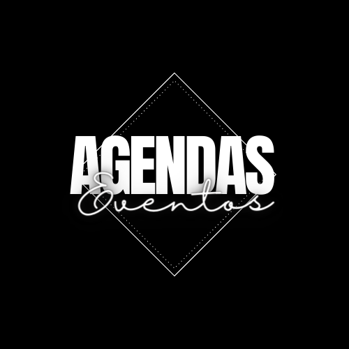

<ion-header [translucent]="true">
  <ion-toolbar>
 <ion-title>Tela principal</ion-title>
 <div class="menu" >
    <a routerLink="/agendas">agenda </a>
    <a routerLink="/eventos">eventos</a>
  </div>
  </ion-toolbar>
</ion-header>

<ion-content [fullscreen]="true">
  
<div class="fundo">
  <ion-button routerLink="/avaliar">
  Avaliação
    <ion-icon slot="end" name="star"></ion-icon>
  </ion-button>
  
</div>

</ion-content>
